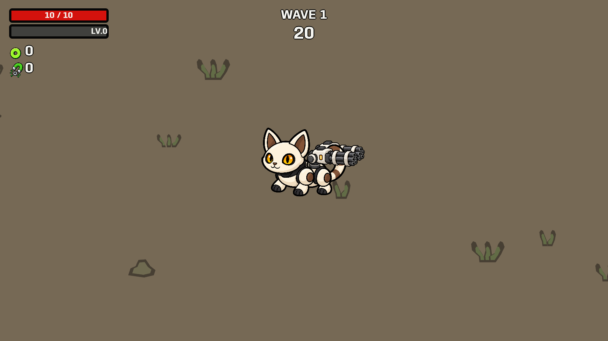
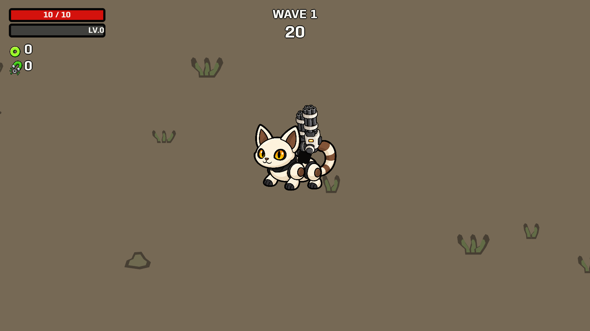
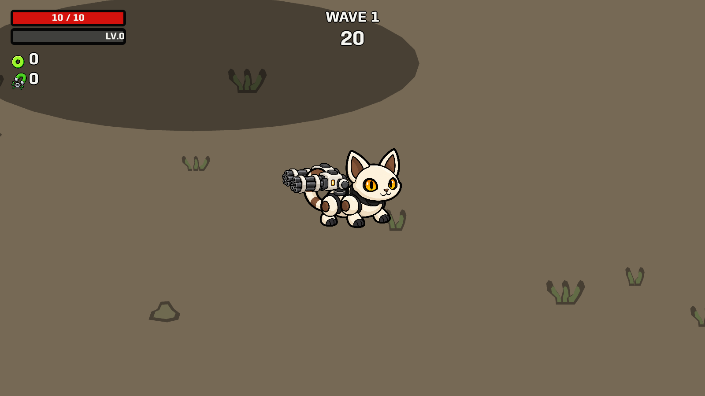
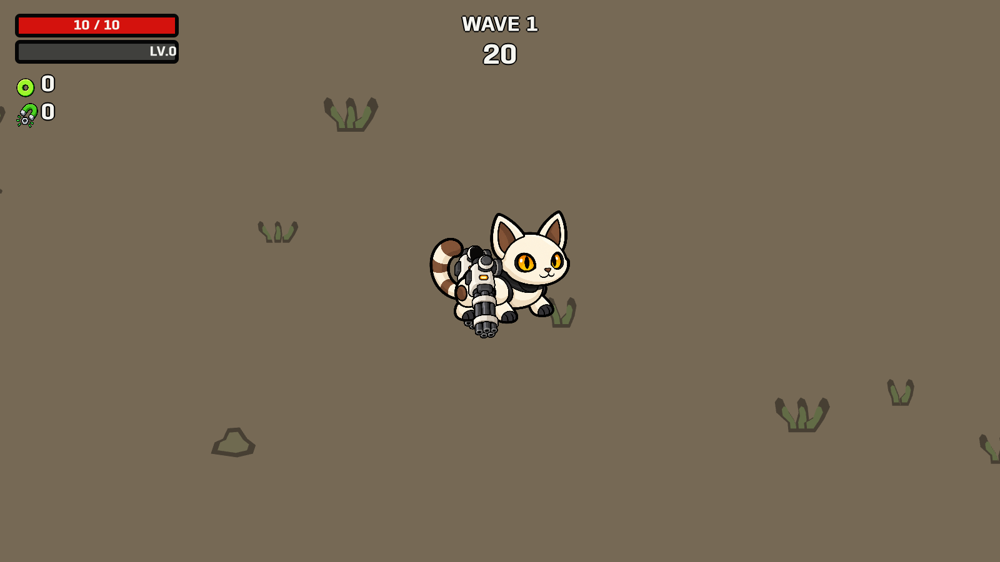
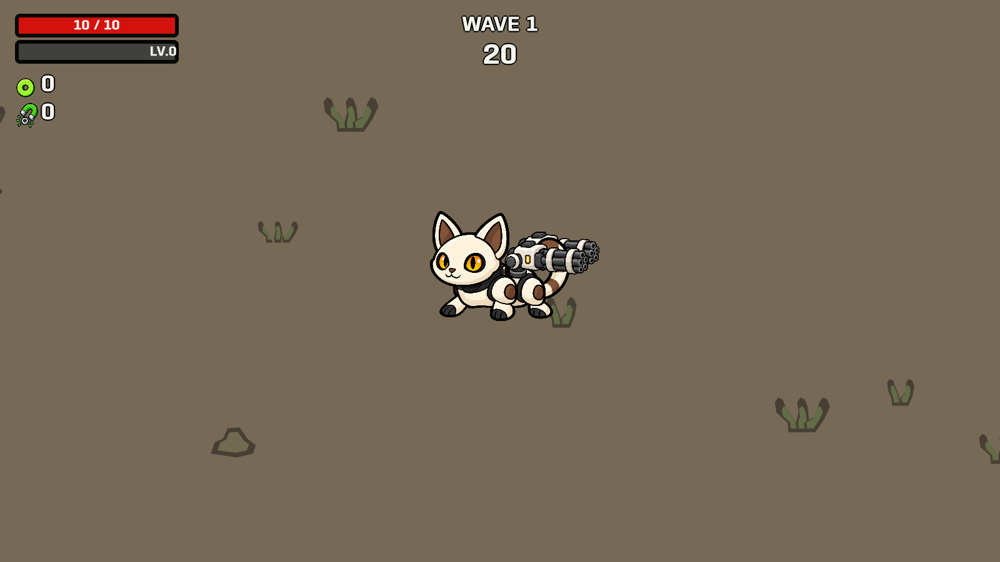

Guns are 24% larger. Fixed bases connect each rotating joint to the back. The legs alternate forward and back while their upper attachment points remain fixed.
The original uses body bounce and sway; the alternating leg motion is our addition.
Launch updated pet level · Behavior checks · Reference and changes




